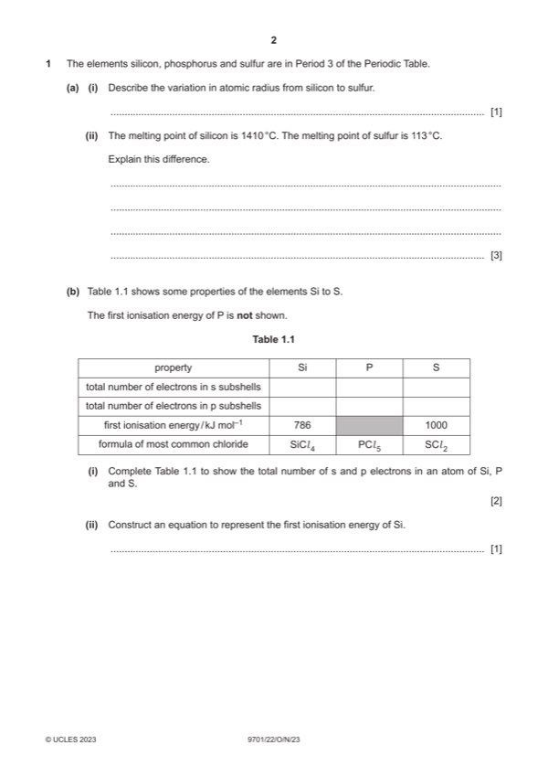

Question 1

Original paper page 2
Part 1(a)(i) — solution
decreases (from Si to S) 1
Mark points
- Include the ideas shown in the solution above.
Part 1(a)(ii) — solution
Answer: OR · OR
- [M1] Si giant covalent AND S is simple molecular 1
- [M2] Si involves breaking covalent bonds AND S involves breaking IMFs 1
- [M3] more energy needed to break covalent bonds than IMFs 1
Mark points
- [M1] Si giant covalent AND S is simple molecular 1
- [M2] Si involves breaking covalent bonds AND S involves breaking IMFs 1
- [M3] more energy needed to break covalent bonds than IMFs 1
Part 1(b)(i) — solution
total e– in s subshell 6 6 6 1
total e– in p subshell 8 9 10 1
Mark points
- Include the ideas shown in the solution above.
Part 1(b)(ii) — solution
- Si(g) → Si+(g) + e– 1
Mark points
- Si(g) → Si+(g) + e– 1
Part 1(b)(iii) — solution
Answer: AND
1060 (is circled) 1
P / it has greater attraction of nucleus for outer electrons compared to Si 1
ORA
P / it has greater nuclear charge than Si 1
ORA
S has two electrons in a (3)p orbital 1
AND
resulting in spin-pair repulsion
Mark points
- Correct result: AND
Part 1(b)(i)(v) — solution
hydrogen chloride / HCl 1
Mark points
- Include the ideas shown in the solution above.
Part 1(b)(v) — solution
non-linear 1
2023 Page 5 of 9
9701/22 Cambridge International AS & A Level – Mark Scheme October/November 2023
Mark points
- Include the ideas shown in the solution above.